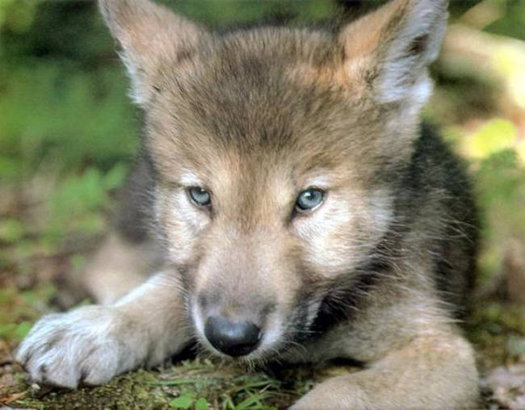
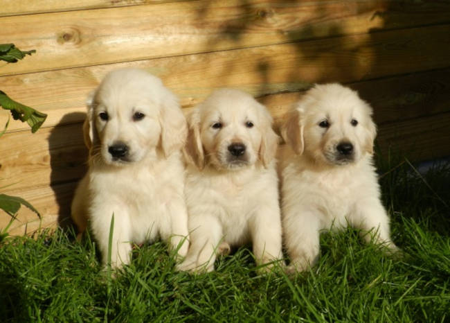

Este abaixo é o Antonio. Cachorro dócil, amigável e adora brincar. Ele tem 1 ano e precisa de um lar!

Penélope é uma cachorrinha filhote e muito carinhosa. Gosta de ficar na sua, e quando o assunto é comer ela é a primeira a chegar no pote!
Estas tres fofuras são futuros peludos e engraçados Goldens. Amam correr, nadar e ficar ao lado do dono. São os verdadeiros amigos do homem!
Se interessou por algum?
Ligue 00000-0000 para mais informações!
voltar<1>